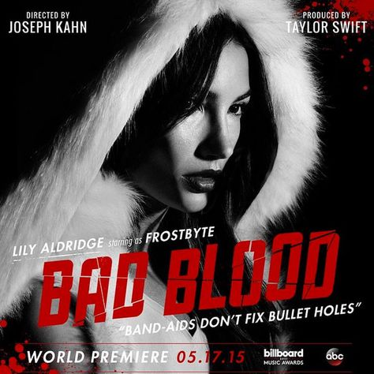
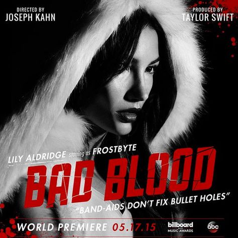

LYRICS
'Cause baby now we got bad blood
You know it used to be mad love
So take a look at what you've done
'Cause baby now we got bad blood (hey!)
Now we got problems
And I don't think we can solve them
You made a really deep cut
And baby now we got bad blood (hey!)
Did you have to do this?
I was thinking that you could be trusted
Did you have to ruin what was shining now it's all rusted
Did you have to hit me where
I'm weak, baby, I couldn't breathe
I rubbed it in so deep
Salt in the wound like you're laughing right at me
Oh, it's so sad to think about the good times
You and I
'Cause baby now we got bad blood
You know it used to be mad love
So take a look at what you've done
'Cause baby now we got bad blood (hey!)
Now we got problems
And I don't think we can solve them
You made a really deep cut
And baby now we got bad blood (hey!)
Did you think we'd be fine?
Still got scars on my back from your knife
So don't think it's in the past
These kind of wounds they last and they last
Now did you think it all through?
All these things will catch up to you
And time can heal but this won't
So if you come in my way, just don't
Oh, it's so sad to think about the good times
You and I
'Cause baby now we got bad blood
You know it used to be mad love
So take a look at what you've done
'Cause baby now we got bad blood (hey!)
Now we got problems
And I don't think we can solve them
You made a really deep cut
And baby now we got bad blood (hey!)
Band-aids don't fix bullet holes
You say sorry just for show
You live like that, you live with ghosts (ghosts, ghosts)
Band-aids don't fix bullet holes (hey!)
You say sorry just for show (hey!)
You live like that, you live with ghosts (hey!)
Hm, if you love like that blood runs
'Cause baby now we got bad blood
You know it used to be mad love
So take a look at what you've done
'Cause baby now we got bad blood (bad)
Now we got problems
And I don't think we can solve them (think we can solve them)
You made a really deep cut
And baby now we got bad blood
'Cause baby now we got bad blood
You know it used to be mad love
So take a look at what you've done (look at what you've done)
'Cause baby now we got bad blood (woah)
Now we got problems
And I don't think we can solve them
You made a really deep cut
And baby now we got bad blood (hey!)
Source: Musixmatch
Songwriters: Max Martin / Shellback / Swift Taylor
About this song
Taylor said: ""I never said anything that would point a finger in the specific direction of one specific person,
and I can sleep at night knowing that," she adds. "I knew this song would be assigned to a person and the easiest
mark was about someone who I didn't want to be labelled with this song." (Sooo, yeah, probably Katy Perry...)
"It was not a song about heartbreak," she concludes. "It was about the loss of friendship. It was important to
show that losing friendships can be just as damaging to a person as losing a romantic relationship."
Bad Blood's long list of Hollywood's biggest and brightest young stars
 
